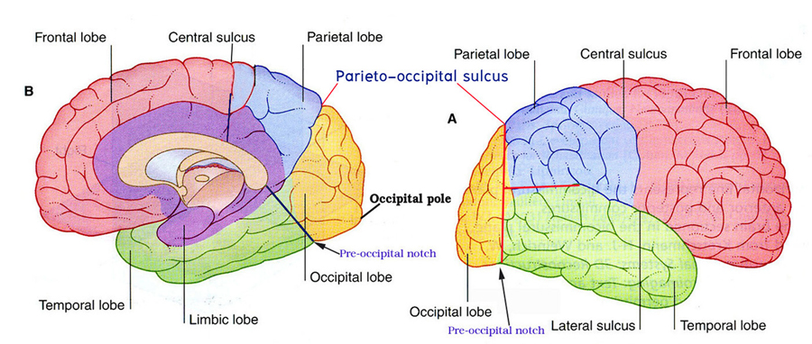
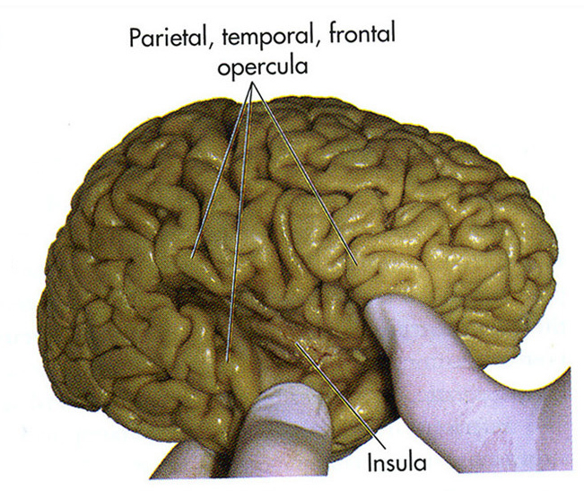

Lobe of cerebral hemisphere
ศึกษาจากสมองผ่าซีก ให้นักศึกษาชี้แสดง lobe ต่างๆ ของ cerebral hemisphere ทั้งด้าน lateral surface และ medial surface
Lobe of cerebral hemisphere (lateral surface)
ขอบเขตของแต่ละ lobe ทางด้าน lateral surface ต้องใช้เส้นสมมุติ ดังนี้

- เส้นสมมุติเส้นที่หนึ่ง ลากจากจุดปลายของ parieto-occipital sulcus ไปยัง pre-occipital notch
- เส้นสมมุติเส้นที่สอง ลากจากหางของ lateral fissure ไปตั้งฉากกับเส้นสมมุติเส้นที่หนึ่ง
- Frontal lobe มีขอบเขตโดยอยู่เหนือต่อ lateral fissure และอยู่หน้าต่อ central sulcus ไปทางด้านหน้าถึง frontal pole
- Parietal lobe อยู่หลังต่อ central sulcus และเหนือต่อ lateral fissure และเส้นสมมุติเส้นที่สอง และอยู่หน้าต่อเส้นสมมุติเส้นที่หนึ่ง
- Temporal lobe อยู่ใต้ต่อ lateral fissure และเส้นสมมุติเส้นที่สอง และแบ่งออกจาก occipital lobe ด้วยเส้นสมมุติเส้นที่หนึ่ง โดยมีส่วนหน้าสุด เรียกว่า temporal pole
- Occipital lobe อยู่หลังต่อเส้นสมมุติเส้นที่หนึ่ง
- Insular lobe เป็น lobe สมองที่อยู่ลึกกว่า lateral fissure จะไม่สามารถมองเห็นได้จากสมองเต็ม (whole brain)
Lobe of cerebral hemisphere (medial surface)
ขอบเขตของแต่ละ lobe ทางด้าน medial surface ต้องอาศัยเส้นสมมุติ ดังนี้
- เส้นสมมุติเส้นที่หนึ่ง ลากจากจุดปลายของ central sulcus ไปจนถึง callosal sulcus
- เส้นสมมุติเส้นที่สอง ลากจาก pre-occipital notch ไปยังปลายหลังของ corpus callosum
เส้นสมมุติรวมกับ sulcus ทางด้าน medial surface ของซีกสมองใหญ่ จึงทำให้แบ่ง lobe ของสมองได้ดังนี้
- Frontal lobe เป็นผิวสมองส่วนหน้าต่อเส้นสมมุติเส้นที่หนึ่ง
- Parietal lobe เป็นผิวสมองที่อยู่ระหว่างเส้นสมมุติเส้นที่หนึ่งและหน้าต่อ parieto-occipital sulcus
- Occipital lobe เป็นผิวสมองส่วนท้ายที่อยู่ระหว่าง parieto-occipital sulcus และเส้นสมมุติที่สอง
- Temporal lobe เป็นผิวสมองส่วน inferior surfaceที่อยู่หน้าต่อเส้นสมมุติที่สอง
